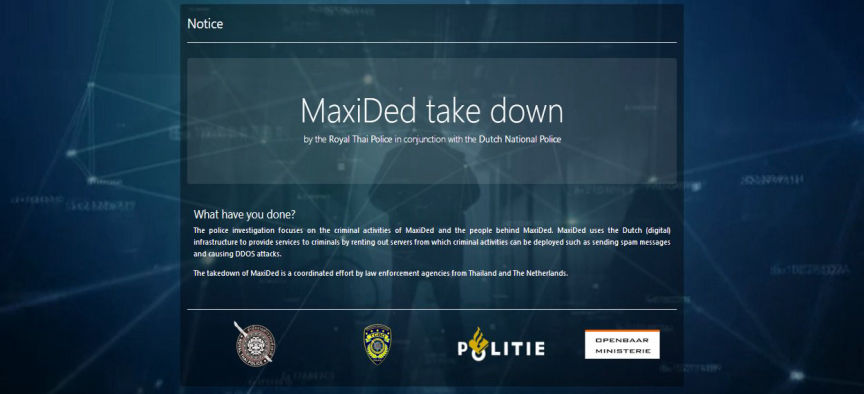
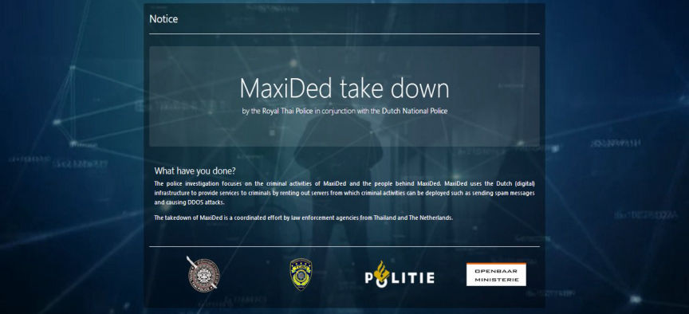

Dutch Police Seized a Bulletproof Hosting Company
Dutch police confiscated ten servers from the bulletproof hosting company known as MaxiDed along with a file-sharing service associated with companies in the Netherlands as part of a long-term investigation in collaboration with Thai police. The owner of the two companies, a 29-year-old man from Moldavia, was arrested in Thailand at a holiday resort in the province of Chumphon, south of Bangkok.

He is suspected of co-perpetrating the spread of child pornography, facilitating cybercrime and money laundering. At the same time, the 37-year-old administrator was arrested in Bulgaria, also of Moldovan origin. The investigation in the Netherlands took place under the authority of the National Public Prosecutor’s Office.
Bulletproof hosting
Team High Tech Crime of the National Unit has taken the website of this bulletproof hosting company offline.
A bulletproof hoster is a crucial link in the cyber-criminal chain. This facilitator offered server space for criminal purposes and prevented the detection by shielding the servers. The investigation showed that the file sharing service offered customers the opportunity to earn money by distributing files.
Many of these customers uploaded and downloaded material that contained child pornographic content. Furthermore, it appeared that both suspects were aware of the fact that child pornography was present on the network but that they were neglecting to act against it.
Customer file
A copy of the existing customer files and other relevant information has been made prior to the offline retrieval of the website. This includes IP addresses and transaction data stored. An IP address is a unique address for a computer and an individual can be traced. The data showed, among other things, that a number of large uploaders are located abroad.
The information relating to international customers will be handed over to Europol, so that foreign investigation services can use the information in various (ongoing) investigations.
In the Netherlands Team Combating Child Pornography and Child Sex Tourism of the National Unit is closely involved in the case and several investigations are being prepared.
Collaboration
Cybercrime is cross-border. Cooperation with foreign police services is essential in the fight against internet crime.

Maxided Takedown Notice
He is suspected of co-perpetrating the spread of child pornography, facilitating cybercrime and money laundering. At the same time, the 37-year-old administrator was arrested in Bulgaria, also of Moldovan origin. The investigation in the Netherlands took place under the authority of the National Public Prosecutor’s Office.
Bulletproof hosting
Team High Tech Crime of the National Unit has taken the website of this bulletproof hosting company offline.
A bulletproof hoster is a crucial link in the cyber-criminal chain. This facilitator offered server space for criminal purposes and prevented the detection by shielding the servers. The investigation showed that the file sharing service offered customers the opportunity to earn money by distributing files.
Many of these customers uploaded and downloaded material that contained child pornographic content. Furthermore, it appeared that both suspects were aware of the fact that child pornography was present on the network but that they were neglecting to act against it.
Customer file
A copy of the existing customer files and other relevant information has been made prior to the offline retrieval of the website. This includes IP addresses and transaction data stored. An IP address is a unique address for a computer and an individual can be traced. The data showed, among other things, that a number of large uploaders are located abroad.
The information relating to international customers will be handed over to Europol, so that foreign investigation services can use the information in various (ongoing) investigations.
In the Netherlands Team Combating Child Pornography and Child Sex Tourism of the National Unit is closely involved in the case and several investigations are being prepared.
Collaboration
Cybercrime is cross-border. Cooperation with foreign police services is essential in the fight against internet crime.